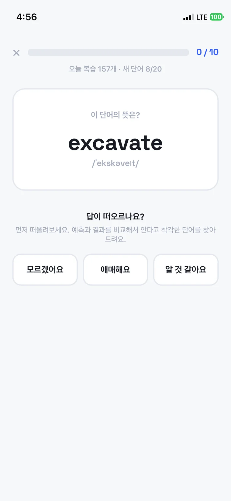
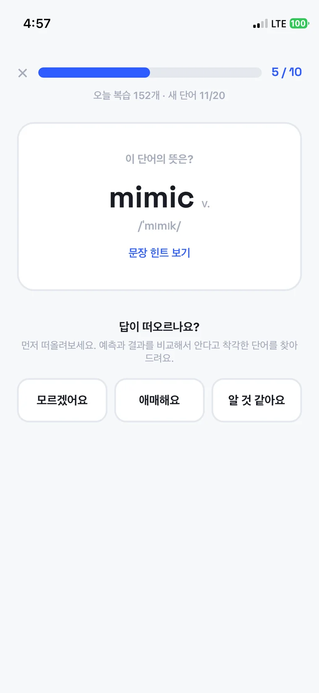
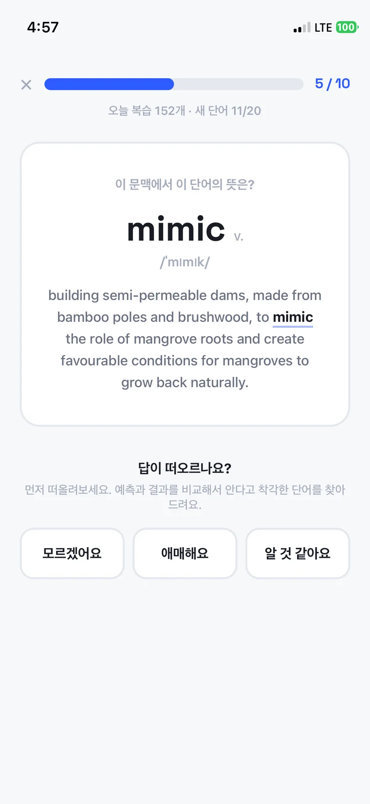
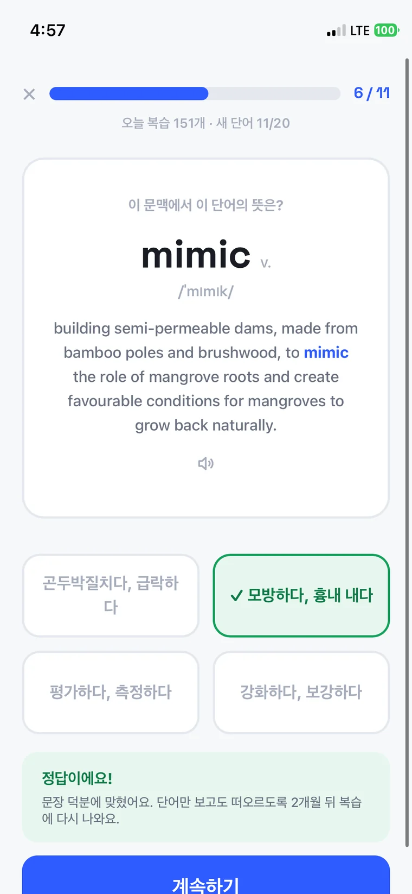
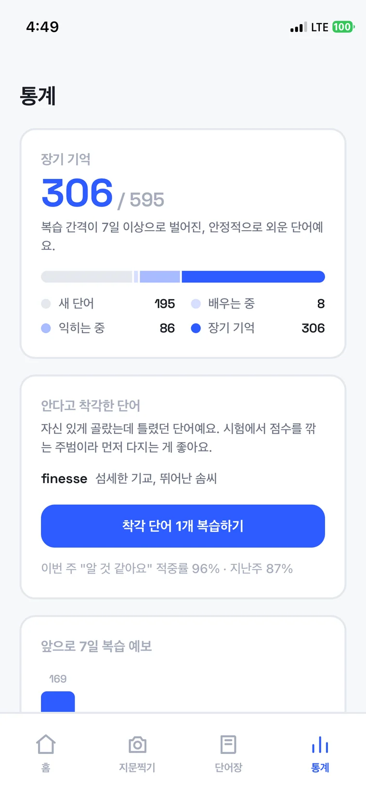

Case 01
직접 만든 것
1인 빌드·운영Built solo
built & run 0→1
외운 단어가 며칠이면 날아간다.
복습 앱은 이미 많은데, 왜 다들 안 쓰게 될까?Words you memorized are gone in days.
Review apps already exist. Why does everyone quit them?
Role
기획 · UX · 디자인 · 프론트엔드 · AI 파이프라인
2026 → · 기여도 100%Strategy · UX · Design · Front-end · AI pipeline
2026 → · 100% mine
문제Problem
국제 공인 영어 시험 IELTS를 준비하면서 계속 같은 자리에서 막혔습니다. 영어 공부를 해도 며칠 지나면 외운 단어를 다시 까먹었어요. 복습을 해야 한다는 건 아는데, 뭘 언제 다시 봐야 하는지가 관리되지 않았습니다. 이미 나와 있는 도구들은 두 군데가 걸립니다. 복습 간격을 자동으로 잡아주는 앱들은 외울 카드를 하나하나 직접 만들어야 해서, 공부를 시작하기 전에 할 일이 하나 더 생깁니다. 시중 단어장은 실린 단어가 남이 고른 단어라, 정작 시험 지문에서 내가 막힌 단어와 어긋납니다. 그래서 두 가지를 뒤집기로 했습니다. 카드는 사람이 만들지 않는다. 단어는 남이 고르지 않는다.Preparing for IELTS, an international English proficiency test, I kept getting stuck in the same place. However much English I studied, the words were gone again within days. I knew I had to review, but nothing kept track of what to revisit and when. The tools that already exist snag in two places. Spaced-repetition apps make you build every card yourself, so there's a chore standing between you and studying. Off-the-shelf wordlists are somebody else's picks, rarely the word that actually stopped you in a test passage. So I inverted both. People don't make the cards. Other people don't pick the words.
만든 것What I built
풀던 IELTS 리딩 지문을 사진으로 찍으면 AI가 그 안의 단어와 구동사, 관용구를 뽑습니다. 뜻만이 아니라 지문 속 문장, 발음기호, 헷갈리는 오답 보기까지 함께 만들어요. 사람이 하는 일은 이미 아는 것을 빼고 모르는 것만 고르는 것뿐입니다.Photograph the IELTS reading passage you were working through and the AI pulls out the words, phrasal verbs, and idioms inside it. Not just meanings: the sentence they appeared in, the pronunciation, and a set of plausibly confusable wrong options. All you do is drop what you already know and keep what you don't.
저장된 단어는 잊을 때쯤 문제로 다시 나옵니다. 익숙해질수록 문제가 어려워지고, 충분히 익은 단어는 쓰기 연습으로 넘어갑니다. 여기까지가 무엇을 만들었는지입니다. 이 케이스에서 할 이야기는 왜 그렇게 만들었는지입니다.Saved words come back as questions around the time you'd forget them. The more familiar a word gets, the harder its question; once a word is solid it graduates into writing practice. That's what I built. What this case is about is why it's built that way.
구조Structure
IELTS는 듣기, 읽기, 쓰기, 말하기 네 영역입니다. 영어 학습 앱을 만들면 누구나 그 넷으로 나눕니다. 저도 처음엔 단어마다 어느 영역인지 딱지를 붙이려 했어요. 그런데 붙이려는 순간 막혔습니다. deteriorate(악화되다)는 읽기 지문에서 만났지만 정작 쓰는 자리는 쓰기 에세이입니다. controversial(논란이 많은)도 마찬가지고요. 단어는 영역에 속하지 않았습니다. 시험이 네 영역으로 나뉘어 있다고 해서 단어도 네 종류인 건 아니었어요.IELTS has four sections: listening, reading, writing, speaking. Build an English app and everyone splits it that way. I started to, tagging each word with the skill it belonged to. Then the tagging stalled. deteriorate turned up in a reading passage, but the place you actually need it is a writing essay. Same for controversial. Words don't belong to sections. The exam being split four ways doesn't make vocabulary four kinds of thing.
그래서 축을 바꿨습니다. 하나가 아니라 둘로요. 첫째, 어디서 들어왔나. 글로 만난 단어와 소리로 만난 단어는 다르게 익혀야 합니다. 그래서 읽기와 쓰기를 문어로, 듣기와 말하기를 구어로 묶었습니다. 단어마다 정하는 게 아니라 사진을 찍을 때 지문 단위로 한 번만 고릅니다. 소리로 들어온 단어에는 소리로 듣고 푸는 문제가 붙습니다. 들어온 경로가 다르면 꺼내는 경로도 달라야 하니까요.So I changed the axis, and used two instead of one. First: how did it come in? A word you met on the page and a word you met in speech have to be practiced differently, so reading and writing group into "written" and listening and speaking into "spoken." You don't tag word by word; you pick once per passage, when you take the photo. Words that came in as sound get questions you answer by ear. If the way in was different, the way out should be too.
둘째, 어디까지 아는가. 여기가 핵심입니다. 읽을 때는 뜻이 바로 떠오르는데 막상 쓰려고 하면 안 나오는 단어가 있습니다. 알아보는 것과 직접 꺼내 쓰는 것은 다른 능력이거든요. 2004년에 이걸 네 단계로 나눈 연구가 있습니다. 쉬운 쪽에서 어려운 쪽 순서로요.Second: how far do you know it? This is the load-bearing one. Some words come to you the moment you read them but won't surface when you try to write them. Recognizing a word and producing it are different abilities. A 2004 study sorts this into four levels, easiest to hardest.
네 단계 중 셋을 문제로 만들었습니다. 셋째 단계는 일부러 뺐습니다.Three of the four levels became question types. The third was left out on purpose.
셋째 단계는 단어를 보고 한국어 뜻을 직접 쓰게 하는 것입니다. 뺀 이유가 셋이에요. 한국어 답은 표현이 무한해서 채점이 안 됩니다. AI로 채점하면 문제마다 돈이 나가는데, 복습은 매일 도는 기능이라 비용이 사용량에 그대로 붙습니다. 그리고 목표가 영어를 써내는 것이라, 한국어 뜻을 정확히 쓰는 능력은 목적지가 아니라 샛길입니다.The third level would ask you to write out the Korean meaning. Three reasons it isn't there. Korean answers have unbounded phrasings, so they can't be graded by string match. Grading them with AI costs money per question, and review runs every day, so the bill scales directly with use. And the goal is producing English; writing a precise Korean gloss is a side road, not the destination.
뺄 수 있었던 건 그 네 단계가 가르치는 순서가 아니라 얼마나 아는지 재려고 만든 것이기 때문입니다. 차례대로 다 거쳐야 하는 건 아니었어요. 축을 이렇게 바꾸니 쓰기와 말하기의 위치도 달라졌습니다. 단어를 따로 모으는 영역이 아니라 이미 모은 단어를 쓸 수 있게 만드는 마지막 단계가 된 겁니다. 충분히 익은 단어만 쓰기 연습으로 넘어가고, 거기서 문장 조각을 맞추는 것에서 시작해 직접 문장을 쓰는 데까지 갑니다. 활용 연습이 옆에 붙은 별도 기능이 아니라 이 단계들의 마지막에 놓인 이유가 여기 있습니다.Leaving it out was available because those four levels are a way to measure how well a word is known, not a teaching sequence. You don't have to go through all of them in order. Changing the axis also moved writing and speaking. They stopped being sections that collect their own words and became the last step that turns collected words into ones you can use. Only words that are solid cross over into writing practice, which starts with assembling sentence fragments and ends with writing sentences outright. That's why practice isn't a feature bolted on beside the app but the last step of the same progression.
근거Grounding
한쪽은 글을 여러 번 다시 읽고, 다른 쪽은 책을 덮고 기억나는 대로 써봤습니다. 5분 뒤 시험은 다시 읽은 쪽이 이겼고, 2일과 1주일 뒤에는 뒤집혔어요. 중요한 건 공부하는 본인은 반대로 느낀다는 겁니다. 다시 읽으면 술술 읽혀 잘 되는 것 같고, 기억해내려 하면 괴롭거든요. 그래서 복습을 전부 문제로 만들고 카드 넘겨보기를 넣지 않았습니다. 편한 쪽을 알고 뺐습니다.One group reread a passage several times; the other closed the book and wrote down what they could recall. Tested five minutes later, rereading won. Tested two days and a week later, it flipped. The part that matters: the learner feels the opposite. Rereading is fluent and feels productive; retrieving is uncomfortable. So review here is entirely questions, with no flip-the-card mode. The comfortable option was left out knowingly.
2013년에 연구자 다섯 명이 학생들이 실제로 쓰는 공부법 열 가지를 효과 순으로 매겼습니다. 밑줄 긋기, 요약하기, 다시 읽기 같은 것들이었고, 최고 등급은 열 개 중 둘뿐이었어요. 스스로 문제 풀어보기와 나눠서 여러 번 하기. 이 앱은 그 둘로만 만들어져 있습니다. 간격은 고정하지 않고 단어마다 따로 계산합니다. 잘 외워지는 단어와 자꾸 틀리는 단어가 같은 속도로 잊힐 리 없으니까요.In 2013 five researchers ranked ten study techniques students actually use by how well they work: highlighting, summarizing, rereading, and so on. Only two of the ten earned the top rating. Practice testing and distributed practice. This app is built out of exactly those two. Intervals aren't fixed but computed per word, because a word that sticks and a word you keep missing don't fade at the same rate.
기억에는 두 가지 힘이 따로 있습니다. 지금 얼마나 쉽게 떠오르는가, 그리고 얼마나 깊이 박혀 있는가. 깊이 박히는 건 꺼내기 어려울 때 꺼내야 늘어납니다. 쉽게 다시 보여주는 걸로는 안 늘어요. 01의 5분과 1주일 역전이 이걸로 설명됩니다. 그래서 앞에서 나눈 단계를 실제로 순서대로 냅니다. 같은 단어라도 익숙해질수록 문제가 어려워지고, 마지막에는 보기 없이 직접 타이핑합니다.Memory has two separate strengths: how easily something comes to mind right now, and how deeply it's stored. Storage only grows when retrieval was hard and still succeeded. Re-presenting the answer cheaply doesn't move it. That's what explains the five-minute versus one-week reversal in 01. So those levels are handed out in order: the more familiar a word, the harder its question, until you're typing it with no options at all.
답을 고르기 전에 먼저 묻습니다. "떠오르나요?" 그리고 자신 있게 골랐는데 틀린 단어를 따로 모아 보여줍니다. 이게 기록용이 아닙니다. 자신 있게 틀린 답은 정답을 알려줬을 때 오히려 더 잘 교정됩니다. 예상하지 못한 피드백이라 주의가 확 쏠리기 때문이에요. 조건이 하나 붙는데, 정답 피드백이 반드시 있어야 합니다. 이 앱은 틀리면 즉시 정답을 보여주니 조건을 만족합니다. 그러니 확신도를 묻는 건 통계 수집이 아니라 가장 크게 교정될 수 있는 순간을 찾아내는 장치입니다.Before you pick an answer it asks: does it come to mind? Then it collects the words you were confident about and got wrong. That isn't bookkeeping. Errors made with high confidence get corrected better once you're shown the right answer, because unexpected feedback captures attention. There's a condition: corrective feedback has to be given. This app shows the answer immediately on a miss, so the condition holds. Asking for confidence isn't data collection, then. It's a way to find the moment where correction lands hardest.

여기까지가 설계입니다. 그런데 설계대로 만들었다고 그대로 작동하는 건 아니었습니다.That was the design. But building to a design doesn’t mean it behaves that way.
부딪힌 것What broke
단어는 문장 안에서 배워야 합니다. 그래서 지문 속 문장을 단어와 함께 저장했어요. 뜻만 외우는 것보다 어떤 자리에서 쓰이는지 같이 봐야 진짜로 아는 거니까요. 그런데 복습에서 그 문장을 같이 보여주면 문제가 생깁니다. 단어 뜻을 몰라도 문장 분위기로 답이 좁혀집니다. 배우는 데 좋은 것이 평가를 망치고 있었습니다.Words should be learned inside sentences, so each word is stored with the sentence it appeared in; knowing where a word sits is part of knowing it. But showing that sentence during review creates a problem. Even without knowing the word, the shape of the sentence narrows the answer. What helped the learning was wrecking the assessment.
그래서 나눴습니다. 처음 보는 단어는 문장과 함께 보여줍니다. 아직 배우는 중이니 맥락이 필요해요. 한 번이라도 만난 단어는 문장을 숨기고 "문장 힌트 보기" 버튼 뒤에 둡니다. 이제는 확인하는 단계니까요.So it splits. A word you're seeing for the first time comes with its sentence, because you're still learning it and context is what you need. A word you've met before has the sentence hidden behind a "show sentence hint" button, because now you're being checked.
그런데 여기서 끝이 아니었습니다. 힌트를 열고 맞히면 그 단어는 아직 단어만으로는 안 떠오른다는 뜻이니, 더 자주 나오게 해야 합니다. 그런데 그걸 감점처럼 말하면 어떻게 될까요. 학습자는 힌트를 안 열고 그냥 찍습니다. 힌트도 안 쓰고, 기록도 거짓이 됩니다. 그래서 벌이 아니라 재출제로 말했습니다.But that wasn't the end of it. If you open the hint and get it right, the word clearly doesn't surface on its own yet, so it should come back sooner. But phrase that as a penalty and what happens? Learners stop opening the hint and guess instead. The hint goes unused and the record becomes a lie. So it's phrased as rescheduling, not punishment.



문장 덕분에 맞혔어요. 단어만 보고도 떠오르도록 2개월 뒤 복습에 다시 나와요.The sentence carried you there. So it comes back in two months, until the word stands on its own.
같은 규칙이라도 어떻게 말하느냐에 따라 학습자가 다르게 행동합니다. 문구 한 줄이 설계의 일부인 자리였습니다. 힌트를 썼는지는 기록해 두고 있습니다. 힌트로 맞힌 단어가 실제로 더 잘 잊히는지 나중에 데이터로 확인하려고요. 아직 판단할 만큼 모이지는 않았습니다.The same rule produces different behavior depending on how it's worded. This was a place where a single line of copy is part of the design. Whether the hint was used is recorded, so I can later check whether hint-assisted words really do fade faster. Not enough of it has accumulated to judge yet.
지금Now
쓰는 사람은 저 하나입니다. 그러니 이 케이스에서 사용자 수를 말할 수는 없습니다. 대신 말할 수 있는 게 있어요. 넣은 화면은 전부 어디서 나왔는지 말할 수 있습니다. 복습을 문제로 만든 것, 간격을 단어마다 다르게 잡은 것, 문제가 점점 어려워지는 것, 답 전에 확신도를 묻는 것, 익은 단어를 쓰기로 넘기는 것. 다 어떤 연구에서 나왔는지 말할 수 있습니다.I'm the only user, so this case can't talk about user counts. It can talk about something else. Every screen that made it in, I can say where it came from. Review as questions, per-word intervals, questions that harden as you improve, the confidence prompt before answering, solid words graduating into writing. Each of them traces to a study I can name.
뺀 것도 마찬가지입니다. 카드 넘겨보기, 한국어 뜻 쓰기, 빈칸에서의 확신도 질문, 시험 네 영역으로 나누기. 넣을 이유가 없어서가 아니라 넣으면 안 되는 이유가 있어서 뺐습니다. 만드는 일에서 어려운 쪽은 늘 후자였어요.The same goes for what was left out. flip-the-card review, writing Korean glosses, the confidence prompt on cloze items, splitting by the exam's four sections. None of them were dropped for lack of a reason to include them; each had a reason not to. The second kind of decision was always the harder one.

직접 만들어 쓰고 있는 앱입니다 · Built it, use it daily · 바로가기Visit ↗
참고한 연구What I read
다시 읽은 집단과 기억해서 써본 집단을 비교했다. 5분 뒤에는 다시 읽은 쪽이 나았지만 1주일 뒤에는 뒤집혔다.Compared rereading against recalling from memory. Rereading won after five minutes; after a week it had flipped.
학생들이 쓰는 공부법 열 가지를 효과 순으로 매겼다. 최고 등급은 문제 풀기와 나눠서 하기 둘뿐이었다.Ranked ten study techniques students actually use. Only two earned the top rating: practice testing and spacing.
기억에는 지금 떠오르는 정도와 깊이 박힌 정도가 따로 있고, 뒤엣것은 꺼내기 어려울 때 꺼내야 늘어난다.Memory has separate retrieval and storage strengths; the second only grows when retrieval was hard.
어휘를 얼마나 아는지를 난이도 순으로 네 단계로 나눴다. 이 앱이 문제를 어렵게 만드는 순서가 이 틀을 따른다.Sorted how firmly a word is known into four levels by difficulty. The order this app hardens its questions in follows that frame.
자신 있게 틀린 답은 정답을 알려줬을 때 오히려 더 잘 교정된다. 예상 못 한 피드백이라 주의가 쏠리기 때문이다.Errors made with high confidence get corrected better once the answer is shown, because unexpected feedback captures attention.